Noțiuni generale ale polinoamelor
- Definiția unui polinom. Forma algebrică a polinoamelor cu o nedeterminată. Funcția polinomială
- Definiția unui Polinom
- Definiția P1: Polinom
- Forma algebrică a polinoamelor cu o necunoscută
- Definiția P2: Forma algebrică a unui polinom
- Definiția P3: Polinoame constante și nule
- Definiția P4: Elementele componente ale unui polinom
- Valoarea unui polinom
- Definiția P5: Valoarea unui polinom
- Proprietatea P6: Proprietăți ale valorii unui polinom
- Funcția Polinomială
- Definiția P7: Funcția polinomială
- Gradul unui polinom și egalitatea a două polinoame
Definiția unui polinom. Forma algebrică a polinoamelor cu o nedeterminată. Funcția polinomială
Conform DEX un polinom este o expresie algebrică construită din mai multe monoame, legate între ele prin semnul plus sau minus sau un polinom este suma algebrică a mai multor monoame.
În matematică, un polinom este o expresie construită dintr-una sau mai multe variabile și constante, folosind doar operații de adunare, scădere, înmulțire și ridicare la putere constantă, pozitivă, întreagă.
Definiția unui Polinom
Fie  un corp comutativ, unde este unul dintre corpurile cu 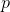 număr prim. Noțiunea de corp este explicată detaliat și exemplificată în ghidul Structuri algebrice, în secțiunea INELE ȘI CORPURI.
un corp comutativ, unde este unul dintre corpurile cu 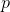 număr prim. Noțiunea de corp este explicată detaliat și exemplificată în ghidul Structuri algebrice, în secțiunea INELE ȘI CORPURI.
Considerăm mulțimea tuturor funcțiilor definite pe  cu valori în , unde
cu valori în , unde  este de forma
este de forma
Fie  nu sunt toți nuli.
nu sunt toți nuli.
Elementul definit mai sus,  , este un șir infinit de numere complexe care are un număr finit de termeni nenuli.
, este un șir infinit de numere complexe care are un număr finit de termeni nenuli.
Cu alte cuvinte, există , astfel încât oricare ar fi
Fie și două elemente din .
Pe mulțimea se pot defini operațiile algebrice:
- adunarea:
- înmulțirea: unde
Elementul  se numește suma dintre și
se numește suma dintre și 
Elementul 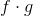 se numește produsul dintre și
Definiția P1: Polinom
Fiecare element , , pentru care se pot defini operațiile de adunare și înmulțire se numește polinom.
Numerele se numesc coeficienții lui , iar coeficientul 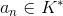 al polinomului , se numește coeficient dominant.
Dacă coeficientul dominant este agal cu  atunci polinomul se numește unitar sau monic.
atunci polinomul se numește unitar sau monic.
Exemple:
- Fie polinoamele și , cu . Calculați 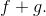
Rezolvare:
- Fie polinoamele 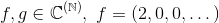 și Calculați
Rezolvare:
Forma algebrică a polinoamelor cu o necunoscută
Definiția P2: Forma algebrică a unui polinom
Scrierea polinomului , unde reprezintă forma algebrică sau forma canonică a polinomului ordonat după puterile crescătoare ale nedeterminatei
Uneori se folosește pentru polinomul și scrierea  unde polinomul a fost ordonat după puterile descrescătoare ale lui
unde polinomul a fost ordonat după puterile descrescătoare ale lui
Mulțimea polinoamelor de nedeterminată 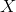 cu coeficienți în se notează
Exemple:
- Să se scrie forma algebrică a polinoamelor și , cu .
Rezolvare:
Polinomul  are forma algebrică:
are forma algebrică:
Polinomul  are forma algebrică:
are forma algebrică:
- Să se scrie forma algebrică a polinoamelor și
Rezolvare:
Polinomul are forma algebrică
Polinomul are forma algebrică
Definiția P3: Polinoame constante și nule
Polinoamele de forma se numesc polinoame constante. Polinomul  se numește polinomul nul.
se numește polinomul nul.
Definiția P4: Elementele componente ale unui polinom
- Elementele se numesc coeficienții polinomului
 Elementul se numește termen liber al polinomului
Elementul se numește termen liber al polinomului  este gradul polinomului
este gradul polinomului - este polinomul numit nedeterminată.
- Termenii se numesc monoame ale polinomului .
Pentru cu număr prim, se obțin următoarele mulțimi de polinoame:
- = mulțimea polinoamelor de nedeterminată cu coeficienți în (sau peste );
- = mulțimea polinoamelor de nedeterminată cu coeficienți în
 (sau peste );
(sau peste ); - = mulțimea polinoamelor de nedeterminată cu coeficienți în
 (sau peste );
(sau peste ); - = mulțimea polinoamelor de nedeterminată cu coeficienți în (sau peste ).
Cum avem
Exemple:
- Polinomul are coeficienții iar termenul liber este
- Coeficienții polinomului sunt iar termenul liber este
- Fie polinomul . Coeficienții acestui polinom sunt și iar termenul liber este
- Avem polinomul Coeficienții acestuia sunt iar termenul liber este 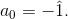
- Pentru polinomul identificăm următorii coeficienți: , iar termenul liber este

Valoarea unui polinom
Fie un polinom de gradul
Definiția P5: Valoarea unui polinom
Dacă elementul se numește valoarea polinomului în 
Exemple:
- Fie 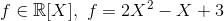 și

Atunci valoarea polinomului în este:
- Fie
![g\in\mathbb{C}[X],\ g=-X^4-2X^2+1](../media/webbooks/338/2150/images/equations/wj1oa7pwc4baunybr6yupg==.gif) și
și
Atunci valoarea polinomului  în este:
în este:
Proprietatea P6: Proprietăți ale valorii unui polinom
Dacă atunci au loc egalitățile:
 oricare ar fi
oricare ar fi - oricare ar fi
 oricare ar fi
oricare ar fi
Funcția Polinomială
Fie ![f\in K[X]](../media/webbooks/338/2150/images/equations/zk2stqsavyr2wwk7aygfow==.gif) un polinom nenul.
un polinom nenul.
Definiția P7: Funcția polinomială
Se numește funcție polinomială atașată polinomului  funcția
funcția
Funcția se numește funcție polinomială dacă există un polinom ![g\in K[X],](../media/webbooks/338/2150/images/equations/velkukueisedrz7hj9aosw==.gif) astfel încât
astfel încât
Exemple:
- Funcția 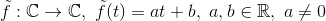 este funcție polinomială atașată polinomului de gradul
- Funcția este funcție polinomială atașată polinomului de gradul
- Funcția este funcție polinomială atașată polinomului
Dacă , atunci funcția atașată polinomului  este unică. (Reciproca acestei afirmații este falsă.)
este unică. (Reciproca acestei afirmații este falsă.)
Reamintim că în anii precedenți de liceu s-a introdus noțiunea de funcție polinomială plecând de la cea de polinom, gândit ca o sumă de monoame de forma așa cum se poate vedea în tabelul de mai jos:
| Polinomul | Funcția polinomială asociată
| Ecuația asociată |
Funcția de gradul întâi | Ecuația de gradul întâi | |
Funcția de gradul doi | Ecuația de gradul doi | |
Funcția cubică 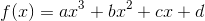 | Ecuația de gradul trei | |
| nedeterminată | variabilă | necunoscută |

Gradul polinomului dă gradul funcției polinomiale.
Coeficienții polinomului sunt coeficienții funcției polinomiale.
A determina funcția polinomială înseamnă a-i preciza coeficienții.
Gradul unui polinom și egalitatea a două polinoame
Gradul unui polinom
Fie polinomul
Definiția P8: Gradul unui polinom
Se numește gradul polinomului notat cel mai mare număr natural cu proprietatea
Dacă  atunci
atunci
Așadar, unde
Definiția P9: Elementele componenete ale unui polinom
Dacă atunci
Termenul se numește termenul liber al polinomului iar coeficientul se numește coeficientul dominant al polinomului
Polinoamele se numesc polinoame constante.
Elementele nenule ale lui sunt polinoame de grad zero.
Exemple:
- Polinomul are termenul liber este iar coeficientul dominant este egal cu
- Gradul polinomului este termenul liber este iar coeficientul dominant este egal cu
- Fie polinomul . Gradul acestui polinom este egal cu termenul liber este , iar coeficientul dominant este egal cu
- Avem polinomul Gradul lui este termenul liber este iar coeficientul dominant este egal cu
- Pentru polinomul gradul este egal cu termenul liber este iar coeficientul dominant este egal cu
- Polinomul are termenul liber este 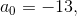 iar coeficientul dominant este egal cu 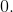
Observăm că, gradul unui polinom este dat de cel mai mare exponent al nedeterminatei al cărei coeficient este nenul.
În particular, gradul unui polinom constant nenul este zero.
Proprietăți ale gradului unui polinom
Identificăm următoarele proprietăți ale gradului, față de operațiile cu polinoame:
Proprietatea P10: Gradul sumei
Gradul sumei a două polinoame este cel mult maximul dintre gradele celor două polinoame.
Fie Avem că
Proprietatea P11: Gradul produsului
Gradul produsului a două polinoame este egal cu suma gradelor celor două polinoame.
Fie Avem că
Egalitatea a două polinoame
Fie și  două polinoame.
două polinoame.
Definiția P12: Egalitatea a două polinoame
Spunem că cele două polinoame definite mai sus sunt egale dacă au același grad și coeficienții lor sunt respectiv egali.
Matematic se scrie astfel:
și
Exemple:
- Fie polinoamele și
Cele două polinoame sunt egale, deoarece au același grad, , iar coeficienții sunt egali respectiv
- Avem polinoamele și Aflați necunoscutele
 și astfel încât polinoamele să fie egale.
și astfel încât polinoamele să fie egale.
Rezolvare:
Pentru ca polinoamele date să fie egale, trebuie ca acestea să aibă același grad și coefiecienții egali.
Observăm că cel mai mare exponent al nedeterminatei a polinomului este  . Atunci
. Atunci
Cel mai mare exponent al nedeterminatei a polinomului este Asta înseamnă că
Ca să avem egalitatea celor două polinoame, gradul polinomului trebuie să fie
În acest caz coeficientul exponentului cel mai mare este Acest coeficient trebuie să fie egal cu zero Atunci polinomul va fi de forma .
Atunci 
În continuare, aflăm celelalte necunoscute, din următoarele egalități ale coeficienților (căci se știe ca cele două polinoame sunt egale):
Avem că:
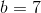
Verificăm cea de-a treia relație a sistemului de mai sus:
Am aflat că avem egalitatea celor două polinoame, dacă și